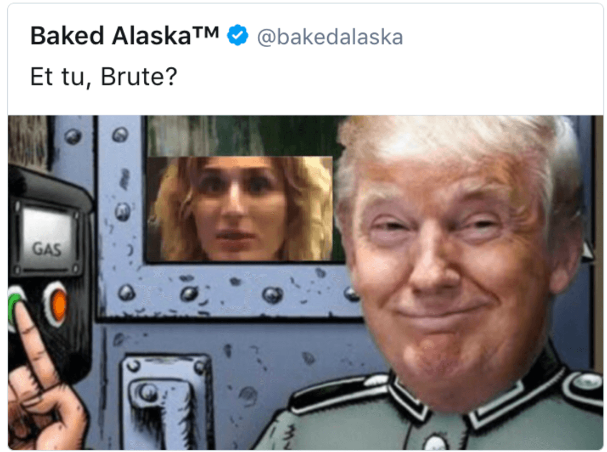
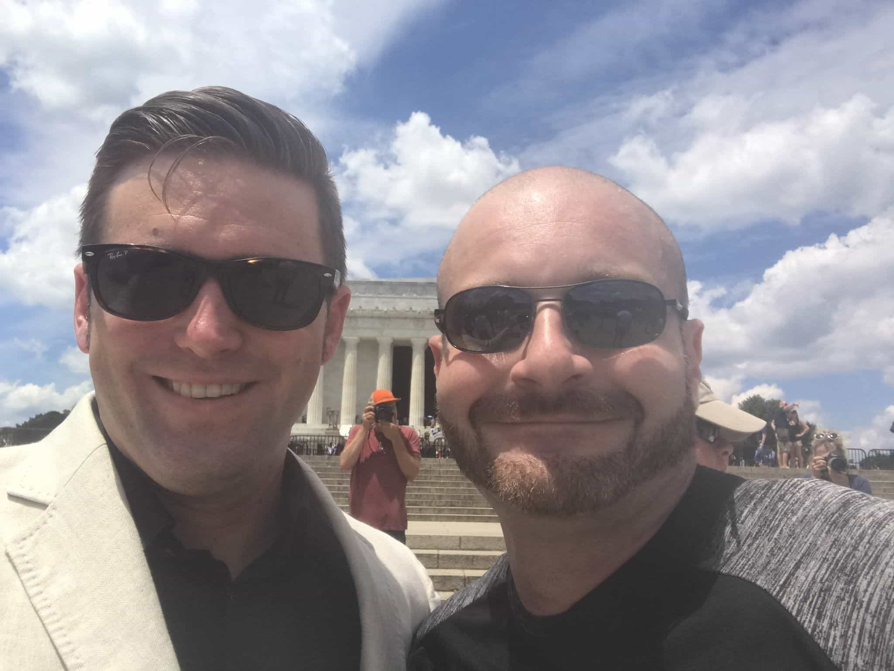

George Green is a former alt-right activist.


As our dedicated readers already know, Return of Kings has remained neutral in the cat fights between the New Right/alt lite and the alt right. ROK and the #RooshRight have carved an independent path rooted in the principles of neomasculinity and the explicit banning of thots and homosexuals from our platforms.
Nonetheless, it behooves us to know what our neighbors are up to, if for no other reason than because they keep banging on the walls and blasting loud music at two in the morning. This afternoon, the alt lite and the alt right held competing “free speech” rallies in Washington, D.C., bringing their subtly different messages to the American public. While the dust is still clearing, it looks like the alt right won a huge victory.
Here’s our take…

The recent slapfight between the alt lite and alt right began nearly two weeks ago. On June 16, Laura Loomer and Jack Posobiec, two journalists from Jewish-funded Rebel Media, disrupted a performance of William Shakespeare’s Julius Caesar in New York City that featured President Donald Trump as a stand-in for Caesar.
Posobiec and Loomer charged that the play was promoting the assassination of President Trump and compared the play’s cast and crew to the Nazis and Joseph Goebbels as they were ejected from the theater.
Self-appointed alt-right leader Richard Spencer, aghast that someone was getting more attention than him, quickly joined with the fake news media in condemning Loomer and Posobiec. Not long after, Loomer, who is Jewish (despite her shiksa-sexy looks), immediately revealed herself as an entryist, referring to the alt right as “neo-Nazis” and demanding that others “condemn” anti-Semitism.
It also came out that she and Posobiec had registered “FreeLaura.com” several hours before launching their stunt.
Wow. I'm calling on @bakedalaska to fully condemn anti-Semitism after posting this pic of me inside a gas chamber. https://t.co/hmBDMgXCtM
— Laura Loomer (@LauraLoomer) June 18, 2017
The battle of witlessness escalated when Gateway Pundit White House correspondent Lucian Wintrich—best known for the homoerotic “Twinks for Trump” photoshoot he did at the Republican National Convention last year—began asserting that Richard Spencer was a homosexual based on trollish comments from YouTube personality James Allsup.
This was further compounded by the release of the “Third Jimpact” podcast, which alleged that homosexuals were using alt right site The Right Stuff’s pool parties (real life meetups) to groom teenage boys for anal sex, with former TRS admin Ghoul named as a culprit.
Further fanning the flames is the fact that for the past month, Spencer’s AltRight.com colleague Daniel Friberg has been at war with Greg Johnson, head of the rival alt-right site Counter-Currents Publishing. Johnson, best known for his assertion that “intolerance of homosexuality is Jewish” (as well as falsely accusing ROK publisher Roosh V of being a rapist), has been deemed a little too implicit for the fashy goys of the alt-right and been summarily drummed out.
The final straw came when Posobiec and Loomer both withdrew from the Freedom of Speech Rally that was to be held on June 25 at the Lincoln Memorial, because Richard Spencer would also be appearing there and they didn’t want any of his “racist” cooties. Instead, they set up their own rally, the Rally Against Political Violence, to be held at the same time a few blocks away.
The stage was set for an epic showdown. Who would win: the undercut-sporting goose-steppers of the alt right or the hysterical e-book merchants of the alt lite?

It’s clear from footage of both events that the Freedom of Speech Rally won out in terms of turnout and media coverage. Recordings from Infowars and Red Ice show that the alt-right rally had over twice the attendance of the Rally Against Political Violence, with most fake news media coverage ignoring the latter. Antifas were also focused on the Freedom of Speech Rally, attempting to disrupt it but failing.
Sorry #AltLite but yes, hate speech- although we may dislike it- is ABSOLUTELY free speech. pic.twitter.com/StGDzkRzVa
— James Allsup 🐹 (@realJamesAllsup) June 25, 2017
#RallyForPeace @Cernovich the weapon for peace is using your camera, the ability to record the truth pic.twitter.com/eXyxm5pJhL
— V.P.LdyNj1 (@LdyNJ1) June 25, 2017
Not only that, the energy was clearly on the alt right’s side. In addition to Richard Spencer and James Allsup, the Freedom of Speech Rally featured appearances from Milo Yiannopoulos’ ex-friend Baked Alaska, Daily Shoah host and confirmed race-mixer Mike Enoch, journalist Jason Kessler, Radical Agenda host Christopher Cantwell and many others.
Conversely, despite the Rally Against Political Violence’s speakers being more popular (going by Twitter follower counts) than the Freedom of Speech Rally’s speakers, energy at that rally was at Jeb-like levels. In addition to Posobiec, Loomer, and Wintrich, Mike Cernovich, Roger Stone, and Virginia gubernatorial candidate Corey Stewart made appearances, but their speeches were limp and phoned-in in comparison.
The Alt-Lite rally was far more pathetic than I expected. Dozens of people. Roger Stone bails. Wintrich creeps out the crowd. Really Sad.
— Richard 🐸 Spencer (@RichardBSpencer) June 25, 2017
#RallyForPeace #KeepAmericaGreat #WashingtonDC pic.twitter.com/HUrYpRQqLV
— #KeepAmericaGreat (@RWPropagandist) June 25, 2017
It’s possible that at least part of the reason why the Freedom of Speech Rally outpaced the Rally for Political Violence is the fact that the former was the “original” event, with the latter only created because Posobiec and Loomer didn’t want to get upstaged by Richard Spencer and his million-dollar smile. N
onetheless, this is a huge propaganda win for the alt-right, and will further hurt the New Right/alt lite as they seek to form an independent identity outside of both mainstream cuckservatism and the alt-right.
#AltRightDC pic.twitter.com/9XSXtKciGE
— Richard 🐸 Spencer (@RichardBSpencer) June 25, 2017
Alt lite needs to transform into a parallel media institution that fights the mainstream media instead of alt right https://t.co/fpcKV83PKn
— Roosh (@rooshv) June 25, 2017
Return of Kings will continue monitoring the antics of the alt lite and the alt right, with an eye to remain critical of but fair to both sides.
Read Next: The Ugly Divorce Between The Alt Right And The Alt Lite